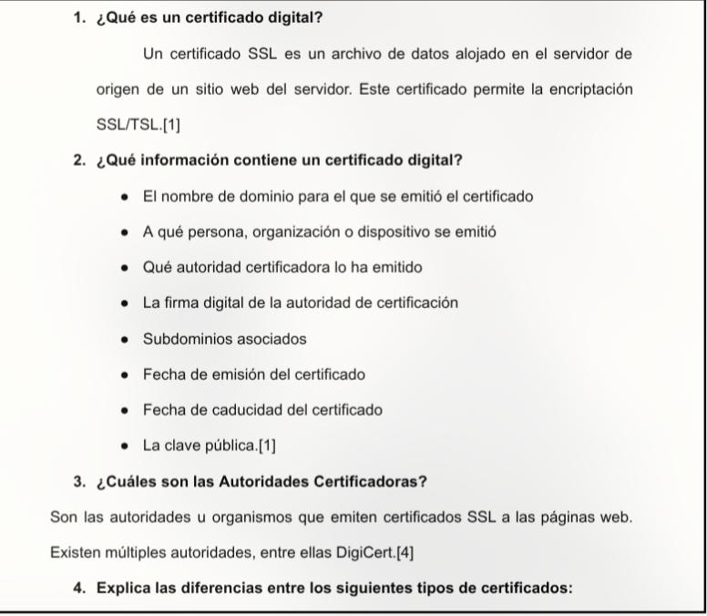
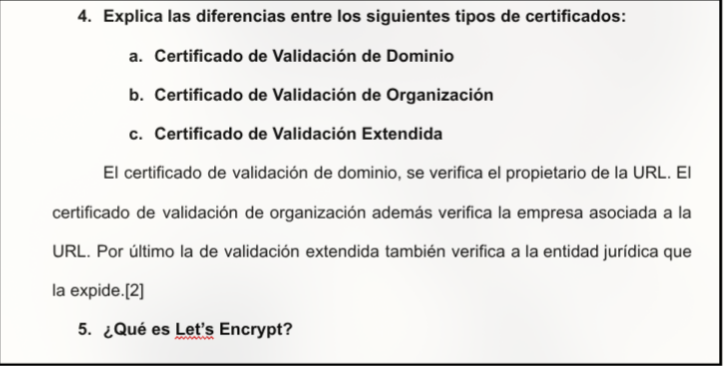
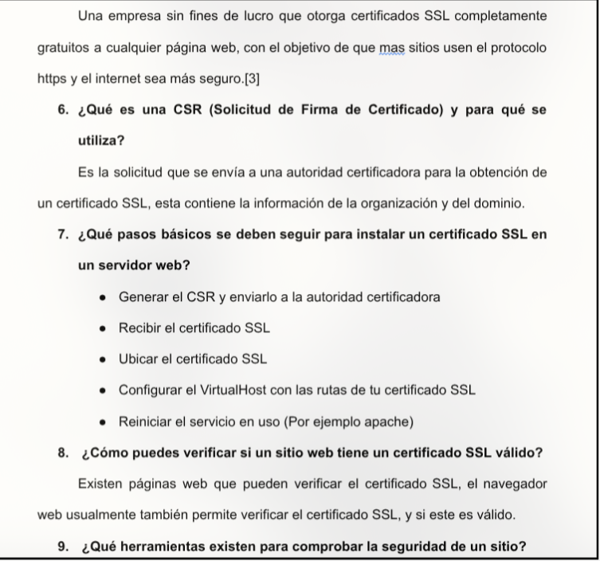
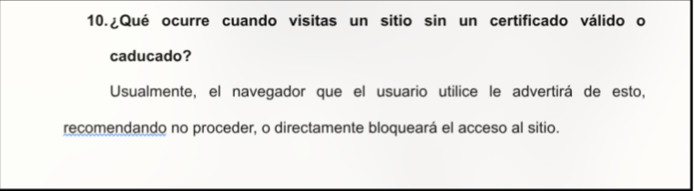

3. Certificados SSL




Diagrama Conceptual de Seguridad:
Cliente
(Navegador) <--> Servidor (HTTPS)
1. ¿Qué es un certificado digital?
Un certificado SSL es un archivo de datos alojado en el servidor de origen de un sitio web. Este certificado permite la encriptación SSL/TSL.
2. ¿Qué información contiene un certificado digital?
- El nombre de dominio para el que se emitió el certificado
- A qué persona, organización o dispositivo se emitió
- Qué autoridad certificadora lo ha emitido
- La firma digital de la autoridad de certificación
- Subdominios asociados
- Fecha de emisión del certificado
- Fecha de caducidad del certificado
- La clave pública
3. ¿Cuáles son las Autoridades Certificadoras?
Son las autoridades u organismos que emiten certificados SSL a las páginas web. Existen múltiples autoridades, entre ellas DigiCert.
4. Explica las diferencias entre los siguientes tipos de certificados:
- a. Certificado de Validación de Dominio: Se verifica el propietario de la URL.
- b. Certificado de Validación de Organización: Además verifica la empresa asociada a la URL.
- c. Certificado de Validación Extendida: También verifica a la entidad jurídica que la expide.
5. ¿Qué es Let's Encrypt?
Una empresa sin fines de lucro que otorga certificados SSL completamente gratuitos a cualquier página web, con el objetivo de que más sitios usen HTTPS y el internet sea más seguro.
6. ¿Qué es una CSR (Solicitud de Firma de Certificado) y para qué se utiliza?
Es la solicitud que se envía a una autoridad certificadora para la obtención de un certificado SSL; contiene información de la organización y del dominio.
7. ¿Qué pasos básicos se deben seguir para instalar un certificado SSL en un servidor web?
- Generar el CSR y enviarlo a la autoridad certificadora
- Recibir el certificado SSL
- Ubicar el certificado SSL
- Configurar el VirtualHost con las rutas de tu certificado SSL
- Reiniciar el servicio en uso (por ejemplo Apache)
8. ¿Cómo puedes verificar si un sitio web tiene un certificado SSL válido?
Existen páginas web que pueden verificar el certificado SSL; el navegador web usualmente también permite revisarlo y confirmar si es válido.
10. ¿Qué ocurre cuando visitas un sitio sin un certificado válido o caducado?
Usualmente el navegador advertirá sobre el riesgo, recomendando no proceder o bloqueando el acceso.